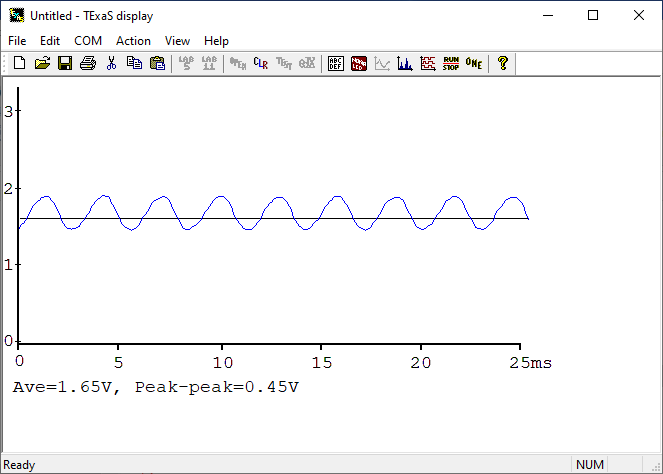
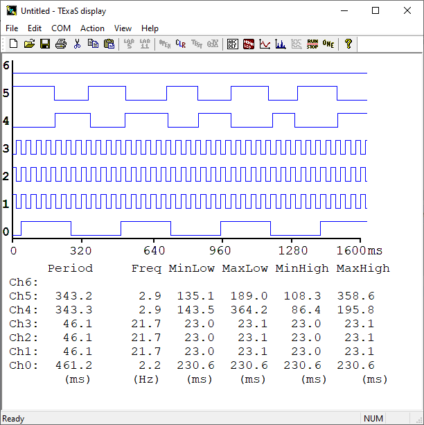

|
Readme
This is a C language project that demonstrates the TExaS
oscilloscope and the TExaS logic analyzer.
Typically, you add TExaS.c to your project creating
the scope or logic analyzer along side your application.
This project simply demonstrates how to configure TExaS.
Data are
sent to the PC at 10 kHz using a low priority periodic interrupt and plotted using the
Windows application TExaSdisplay.
Using either the scope or logic analyzer will consume
from 1 to 2% of the CPU time.
The system uses UART0 and TIMG10.
The system can operate at either 32 or 48 MHz.
You specify your bus frequency at initialization.
In the TExaS.h file you
set TEXAS_SCOPE=1 to create an 8-bit analog oscilloscope or
set TEXAS_SCOPE=0 to create a 7-bit digital logic analyzer.
The scope uses either
ADC0 or ADC1 depending on how you initialize.
Any of the 16 analog pins on the MSPM0G3507 can be configured
as the analog source. The ADC is set to continuously sample, but
data are sent to the PC through UART0 only at 10 kHz. For example
TExaS_Init(ADC0,TEXAS_48MHz,5);
will configure TExaS as a scope using ADC0 channel 5 (PB24), which
is the microphone on the MKII booster. The following figure shows
the scope trace displaying voltage versus time from the microphone.

The following figure shows
the spectrum analyzer trace displaying amplitude versus frequency from the microphone.

The logic analyzer allows any 7 digital pins to be measured.
Some options are predefined in TExaS.h.
However, you can define other pin configuration by
by defining your own TEXAS_LOGIC macro. This macro
creates a 7-bit data value, adding bit 7 high.
This value is sent to the PC through UART0 at 10 kHz.
For example, the following configures logic analyzer for PB21,PA18,PB27,PB26,PB22,PA0.
#define PAoutPin0Bit0 (GPIOA->DOUT31_0&1)
#define PBoutPin22Bit1 (((GPIOB->DOUT31_0&(1<<22))>>21))
#define PBoutPin26Bit2 (((GPIOB->DOUT31_0&(1<<26))>>24))
#define PBoutPin27Bit3 (((GPIOB->DOUT31_0&(1<<27))>>24))
#define PAinPin18Bit4 (((GPIOA->DIN31_0&(1<<18))>>14))
#define PBinPin21Bit5 (((GPIOB->DIN31_0&(1<<21))>>16))
#define TEXAS_LOGIC (0x80|PBinPin21Bit5|PAinPin18Bit4|PBoutPin27Bit3|PBoutPin26Bit2|PBoutPin22Bit1|PAoutPin0Bit0)
This 6-bit logic analyzer consumes about 2% of the CPU time.
The following figure shows
the logic analyzer trace displaying PB21,PA18,PB27,PB26,PB22,PA0 digital pins versus time.

Derived from Texas Instrument code
- adc12_single_conversion_vref_internal_LP_MSPM0G3507_nortos_ticlang
- adc12_single_conversion_LP_MSPM0G3507_nortos_ticlang
|